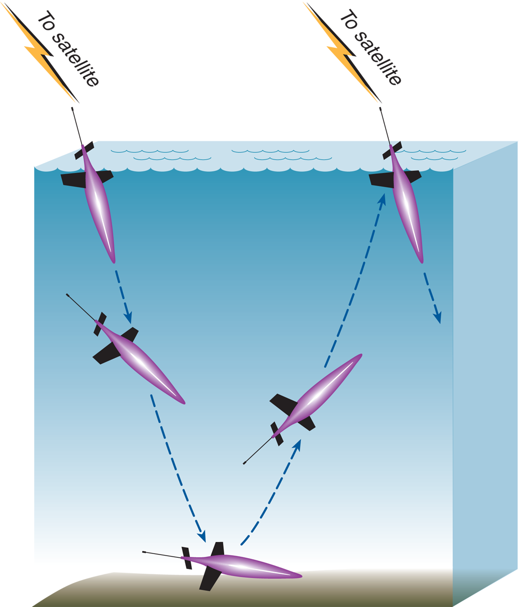

Seagliders
Seaglider Animation (credit robotoblog.com)
https://gliders.ioos.us/erddap/status.html
Seaglider Fundamentals
Seagliders are buoyancy-driven AUVs: they move through the water without an active thruster and are thus extremely energy efficient. Seaglider is designed for max energy efficiency. Main energy draw is variable buoyancy pump, referred to as the VBD (~50%).
With a glider, some vertical motion is translated into horizontal motion by the wings. Vertical speed is ~10 cm/s. Glide slopes from ~1:1 to ~1:5, horizontal speed ~25 cm/s. The glider can control its pitch and roll by shifting its large internal battery. It uses roll to bank and turn so that it can maintain a specified heading.

Typical 1000 m ocean density is 1027.5 kg/m3. Shorthand notation for density: σ = (density - 1000) kg/m3 – so the typical 1000 m density is 27.5 in σ units (or σθ since density is measured based on potential temperature θ).
We use potential density (which removes the effect of pressure on density) when talking about Seaglider because Seaglider (mostly) matches the compressibility of seawater due to its hull design.
The most important formula in glider operations: \[ \rho = \frac{m}{V} \]
VBD
Seagliders have 800 cc’s of volume change in their VBD.150 cc’s is needed to expose the antenna, and 250 cc’s is needed for negative thrust at the deepest density. This leaves 400 cc’s of available volume change to account for different density waters.
SGX’s take ~70 cc’s/σT and SG takes ~50 cc’s/σT. This translates to an available density range of 5.5 σT for SGX and 8 σT for SG.
The VBD is comprised of an internal reservoir, a rolling diaphragm called the bellofram, an external oil bladder, and a pumping system that pumps low-viscosity hydraulic oil between the internal and external reservoir/bladder. There is a low pressure boos pump that provides the pressure needed for the high-pressure hydraulic axial piston pump (the main pump). The boost pump is only used at depth and when trying to ascend. A magnetically latching “Skinner” solenoid valve controls the quantity of oil that is pumped. Three check valves control the direction and rate of flow within the VBD.
The Seaglider’s buoyancy is controlled by the VBD by (a) pumping oil from the internal reservoir into the external bladder to increase the glider’s volume, and (b) allowing oil to bleed from the external bladder into the internal reservoir to decrease volume. The piston’s position is measured by two linear potentiometers in A/D counts. Larger A/D counts imply a larger internal reservoir volume, and thus a lower buoyancy for the Seaglider. $C_VBD is set to be the point at which the glider is neutrally buoyant relative to the densest water encountered on a mission. The VBD parameters enable the pilot to control the glider’s vertical velocity and glide slope.
Mass Shifter
Seaglider moves a mass inside the pressure hull to change its pitch and roll attitude. The main battery, plus 1100 g brass weight attached to the bottom, is mounted on the mass shifter assembly. The battery pack is shifted fore and aft to affect pitch and rotated to change vehicle roll. The maximum roll for SGX is 80 degrees and for SG it is 40 degrees.
Pitch
Moving the main battery pack is don eby an electric motor that drives a worm gear in such a way that 1 A/D count equals 0.00413 cm of battery mass travel for SGX ($PITCH_CNV) (0.00313 cm/count SG). One centimeter of mass travel is roughly 15-20 degrees of pitch. $PITCH_GAIN controls this ratio and is tuned by the pilot. There are physical hardware limits on the mass position, as well as software limits to prevent damage to the mass shifter assembly. These are not adjusted while piloting.
A/D counts are always positive, but deisplacement may be positive or negative depending on $C_PITCH. $C_PITCH is usually tuned so that 70% of the pitch travel is for pitching down and 30% is for pitching up. THis is to ensure a good surface position to fully expose the antenna.
Roll
The main battery pack is axially asymmetric and weighted on its ventral face. An electric motor and gear train rotate the mass such that $ROLL_CNV is 0.054945 degrees/count for SGX and 0.028270 for SG. Seagliders typically roll about 1/4 degree per 1 degree of battery pack rotation–and 1/2 degree for SG–but this varies depending on the trim lead.
When a turn is indicated, Seaglider rolls to $ROLL_DEG (80 degrees for SGX, 40 degrees for SG) then back to neutral when the desired heading is reached. LIke pitch, there are hardware and software limits for roll. Different roll centers are used for the dive and climb because various asymmetries in form result in different roll trim on dives and climbs.
Glider Control
The Seaglider flight control scheme has two guiding principles: (1) maintain constant vertical velocity and (2) minimize the total energy expenditure during a dive. The Seaglider samples its sensors evenly in time, so the constant vertical velocity implies the samples are equally spaced in depth.
To acheive a desired vertical velocity, typically 10 cm/s, specify a target depth ($D_TGT) and time to complete a dive ($T_DIVE).
\[ W_{\text{D}} = \frac{2*\$D\_TGT*100 cm/s}{\$T\_DIVE*60 s/min} \]
To acheive a W_{} of 10 cm/s, choose a $D_TGT that is 3 times the value of $T_DIVE. A typical first shallow test dive uses $D_TGT,45 and $T_DIVE,15. A full-depth dive uses $D_TGT,990 and $T_DIVE,330.
The buoyancy and pitch used on any individual dive is chosen by the Seaglider operating software to acheive the best results on that dive. The software has to choose a buoyancy value between 0 (neutral) and $MAX_BUOY (the maximum negative buoyancy allowed on a dive), and a desired pitch angle between the stall angle and $GLIDE_SLOPE (the maximum glide slope allowed on a dive). The choice of these values is determined by the distance to the next waypoint. First, the pitch angle is chosen to acheive the desired horizontal distance: maximum if the waypoint is distant, minimum if the waypoint is close. Second, the buoyancy is chosen to acheive the desired vertical velocity in the deepest water (deepest depth).
50% of the total energy budget goes to the VBD pump. The greatest energy draw is pumping oil into the external bladder at depth, where the pump has to overcome the seawater pressure acting on the bladder. Generally, pumping is allowed only as necessary to maintain vertical velocity. Pitch is essentially fixed at all phases with the exception of minor pitch maneuvers on the climb to compensate for changes in mass distribution and buoyancy due to pumping oil.
Run Phases
Data collection is continuously sampled during the dive, climb, and apogee phases of a run as specified in the science or scicon.sch file.
G&C intervals are set in the science file, and they specify the pitch, VBD, and roll adjustment times, in that order. Only one operation can happen at a time. When G&C operations occur, the Seaglider is in active G&C mode. When G&C corrections are not being made, it is in passive $G&C pode. Data acquisition is not affected by G&G modes.
Launch
The pilot has initiated launch proceedfure and all the launch dialogue is completed. In its surface position, the mass shifter is rolled to neutral, pitch fully forward, and the VBD is pumped to $SM_CC (usually nmax VMD for launch). It then acquires a GPS fix and initiates communications via Iridium salletite phone.
Surface
1: Surface Maneuver
- Pitched fully forward
- Rolled to neutral
- Pumped to $SM_CC
Seaglider enters surface maneuever if: - At launch - Normal completion of a dive (reached $D_SURF) - In recovery mode - $T_MISSION is reached before $D_SURF
*If VBD > $SM_CC, VBD will not bleed down to $SM_CC.
2: GPS1
Once the desired surface position is attained, $GPS1 is acquired. The GPS receiver is turned on and turns off when $N_GPS HDOP <= 2 (excellent GPS accuracy) or $T_GPS minutes have elapsed. The position is then accepted, otherwise the last position is accepted.
3: Communications
After $GPS1, Seaglider powers up the Iridium phone, waits a specified time for registration with the Iridium system, then attempts a data call to the basestation. It then logs in and transfers data, log, and engineering files to the basestation, and receives command, control, diagnostic, and special purpose files. If not all files were transferred, it waits $CALL_TRIES times and moves on if not successful, incrementing $N_NOCOMM.
4: Measure Surface Depth and Angle
- Averages 10 pressure readings and 10 pitch angles.
- Adds these values to the logfile for the next dive
5: GPS2
- Acquires second GPS fix.
- This is the most recent GPS fix before the Seaglider dives.
Dive
At the start of the dive phase, the first G&C operation only bleeds the VBD to get the glider as fast and deep as possible (pitch is still fully forward). Once $D_FLARE is reached, regular G&C operations (pitch, VBD, roll) begin.
If the glider is travelling faster than the desired vertical velocity, VBD pumping is not allowed. This is ultimately to conserve energy.
In the dive phase, the Seaglider turns to starboard by banking to port.
Apogee
Apogee phase is initated when $D_TGT is reached. Two G&C cycles are completed to ensure a smooth flight from the dive phase to the climb phase. Data sampling continues.
Cycle 1:
Pitched to $APOGEE_PITCH
Rolled to neutral
VBD pumped to 0 cc ($C_VBD)
Course adjustment & passive mode skipped
Cycle 2:
Pitched to inverse of dive
VBD pumped to inverse of dive
Climb
At the start of the climb phase, the Seaglider is positively buoyant and pitched up, headed for teh surface at the same vertical rate as acheived on the dive phase. Data acquisition and G&C continue at intervals specified in the science file.
In the climb phase, the Seaglider turns to starboard by banking to starboard.
When $D_SURF is reached, passive G&C mode is on and data acquisition continues for \(D_SURF/(\)(\(W_{\text{observed}}\) m/s) or 50 data points.
Recovery
The recovery phase is entered either by command of the pilot or by an error detected by the Seaglider operating software. THe Seaglider stays on the surface and enters a loop of obtaining GPS fixes and communicating every $T_RSLEEP minutes. There are 2 minutes of overhead added to $T_RSLEEP, so actual call time is $T_RSLEEP + 2. Recovery is ended by sending a $RESUME in the cmdfile to continue diving.